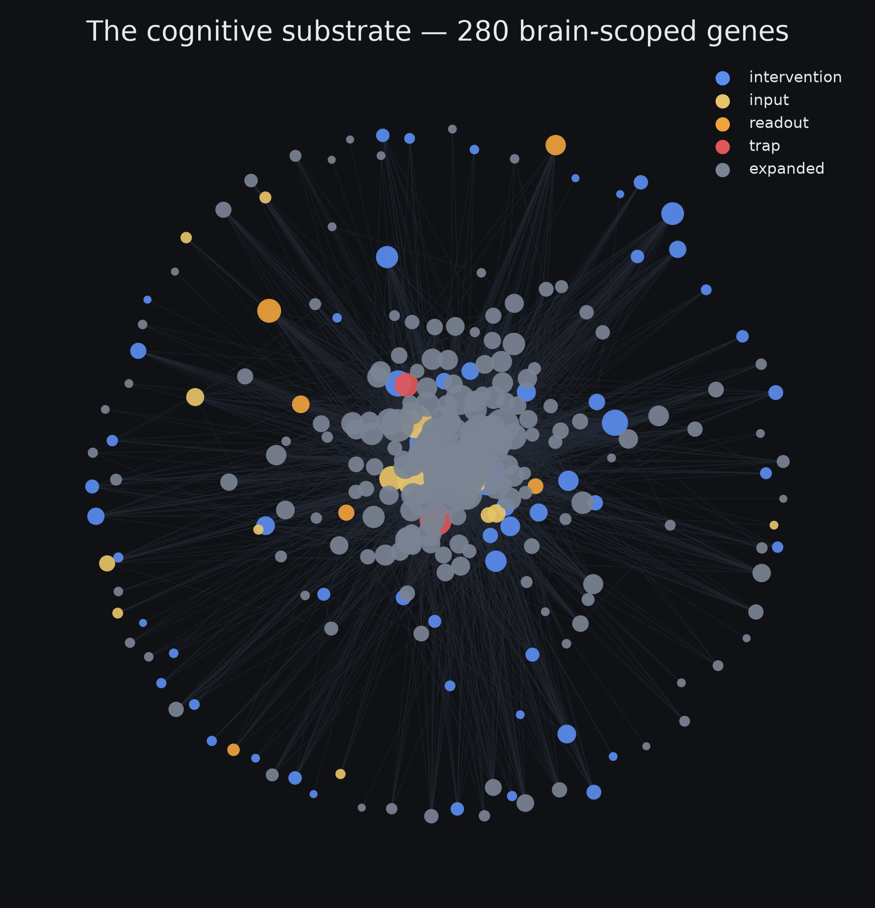
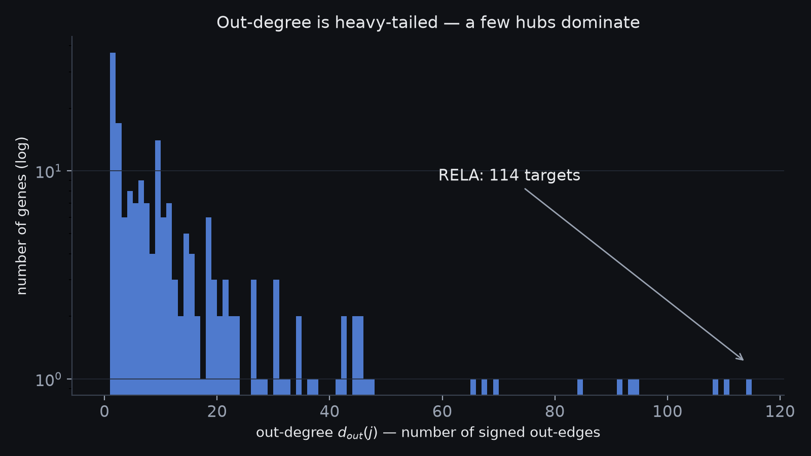
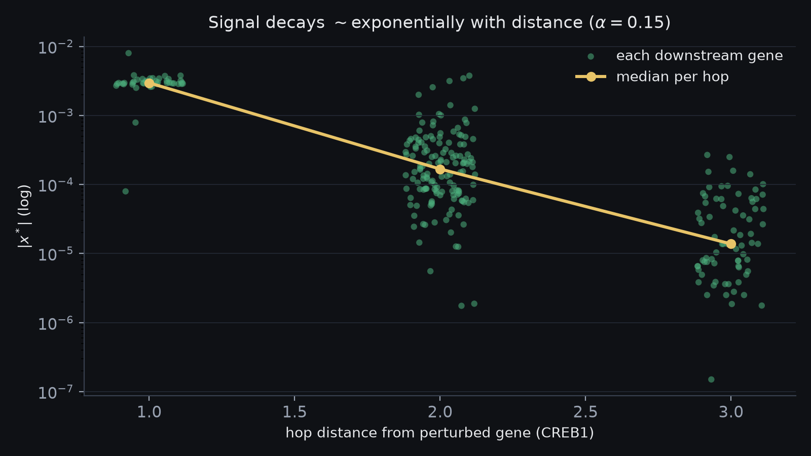
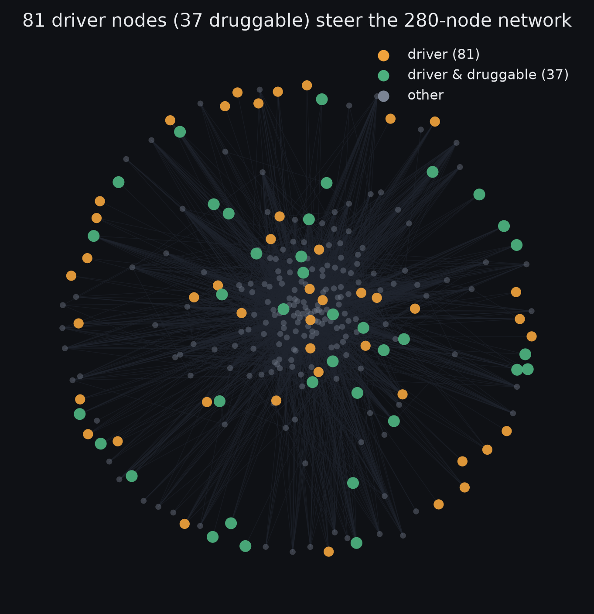
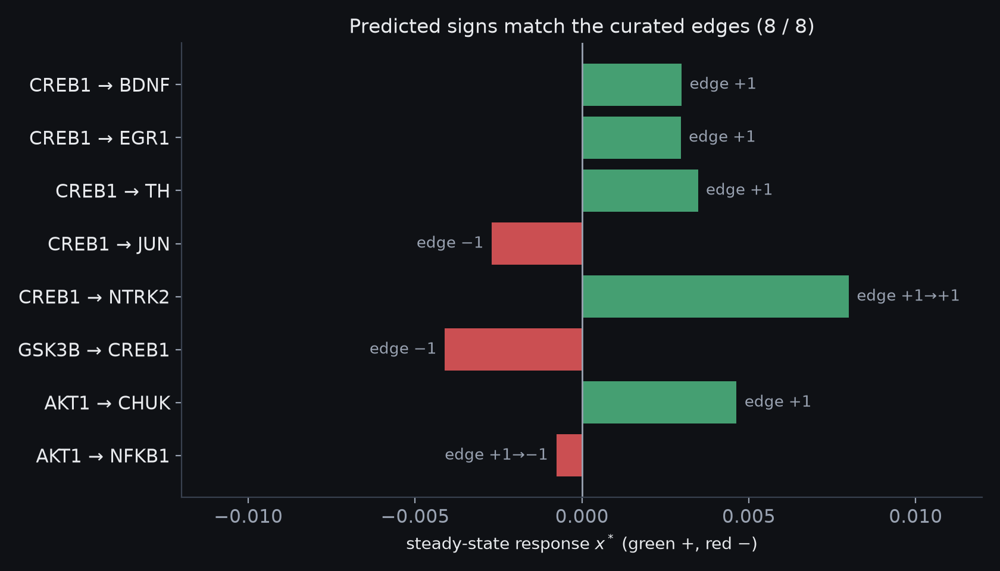

A Network-Control Approach to a
Learning-Optimal Brain State
📌 Archived snapshot — v1 · 10 July 2026. This page is frozen; the current version may differ → latest version.
Overview. This project treats a biomedical knowledge graph as a signed, directed control system and asks a simple question with a hard answer: which genes would you nudge, and by how much, to move the brain toward a state that's good for learning — without disturbing everything else? Starting from PrimeKG[1] (129,375 nodes), I scope down to a 280-node "brain core" (2,871 signed edges, with a 200-node feedback loop), push perturbations through it with a random-walk-with-restart[4], and use control theory[9] to ask what the network can even be steered to. The scoring objective, the uncertainty analysis[12], and the optimizer[15] are written out below but not yet run — that's the next phase. What is built is checked by comparing its predicted signs against curated regulatory edges (8/8). The eventual output is a ranking of interventions and a trade-off map — not fold-change predictions, and not a protocol.
1. Substrate
The base graph is PrimeKG[1] — 129,375 nodes and about 4 million edges across ten types (genes, drugs, diseases, pathways, and so on). It comes from the Hetionet / Rephetio line of work[2], which scores paths through a graph like this to repurpose drugs.
Most of that graph has nothing to do with learning, so I keep only genes that are mostly expressed in brain
tissue. The score for a gene $v$ is the fraction of the tissues it appears in that are brain tissue, over PrimeKG's
anatomy_protein_present edges $E_a$:
In words — keep a gene only if a decent share of the tissues it's active in are brain, and only if it's active in enough places for that share to mean something.
After pruning: 280 nodes in four layers — 70 intervention "knobs", 15 systemic inputs, 6 disease readouts, 2 off-limits, and 187 one-hop neighbors — with 3,912 directed edges (2,871 signed: 2,253 activating, 618 inhibiting) and a single 200-node feedback loop.

2. The propagation operator
Put the edges in a matrix $W$: the entry $W_{ij}$ is $+1$, $-1$, or $0$ for the effect of gene $j$ on gene $i$ (oriented so $(Wx)_i$ is what flows into $i$). A hub gene with many out-edges would swamp everything, so I divide each gene's column by its out-degree — the same trick as Google's PageRank[3] ($d^{\mathrm{out}}_j=\sum_i|W_{ij}|$):
In words — spread each gene's outgoing effect evenly across the genes it points at, so one gene that talks to everyone can't dominate.
Each column now sums to 1 in absolute value, which forces the largest eigenvalue to be $\le 1$ (Perron–Frobenius) and keeps the next step stable (measured: $\rho(\hat W)=0.544$). Dividing by out-degree is the right move for a directed graph, where the problem is out-hubs; the symmetric GCN version $D^{-1/2}\tilde W D^{-1/2}$[6] is for undirected graphs.

3. Propagation by random-walk-with-restart
To see what a nudge does, push a signal $p$ into one gene and let it spread — but pull a fraction $\alpha$ back to the source at each step, so it stays near where it started[5],[4]:
In words — at each step, spread the signal one hop, but yank a fixed slice $\alpha$ of it back to the gene you started from.
Solving for the value it settles to gives a closed form (a sum over every path length $k$):
In words — the settled response; each extra hop is discounted by $(1-\alpha)^k$, so far-away genes barely feel it.
Because far hops are discounted, the effect stays local — most of the signal is gone within a few hops. The 200-node feedback loop is why we solve for a settled value instead of taking a single push.

4. Controllability
Can a few inputs steer the whole thing? Written as a linear system with input map $B$ (the genes we can drive), $\dot{x}=Wx+Bu$, it's fully steerable when the controllability matrix has full rank (Kalman[7]):
In words — you can reach any state exactly when your inputs, pushed through more and more hops, together cover all $N$ directions.
Testing that directly is impractical at this size, so I use structural controllability (Lin[8]; Liu–Slotine–Barabási[9]): the fewest genes you must control is the number left unmatched after pairing up the network as well as possible,
In words — match each gene to one it directly drives; whatever's left over is what you have to control by hand.
The matching is found with Hopcroft–Karp[10]. The result: all 280 genes are reachable, but full control would need 81 driver genes and only 37 of those are druggable — so you can't push it to any state you like. You can steer the readouts you actually care about (target control[11]), which takes fewer inputs, and that's the setting the optimizer works in.

| quantity | value |
|---|---|
| druggable inputs $|\mathcal D|$ | 172 |
| reachable $|R|/N$ | 280 / 280 |
| min drivers $N_D$ (full control) | 81 |
| drivers that are druggable | 37 / 81 |
| feedback component (SCC) | 200 |
5. Target state and objective
The target is a vector $d$ of desired changes. The key fact: most brain variables aren't "more is better" — they have a sweet spot, an inverted-U (Yerkes–Dodson[18]; Arnsten[19]): dopamine, arousal, cortisol, excitation/inhibition balance, mTOR. Benefit is how much closer to the target you get:
In words — positive if the nudge moved a gene toward its ideal level, negative if it pushed past it.
Total benefit weights each gene by how sure we are of its target (readouts count for nothing); cost is how hard you push plus how much you disturb genes outside the target set:
In words — add up the good across all genes, then subtract the cost: effort plus collateral movement elsewhere.
The current target vector covers 94 genes: 43 set-point, 30 up, 12 down.

6. Uncertainty quantification
Many edge strengths are known only by sign, so a single number would be overconfident. The plan: run the model many times over that uncertainty (Monte-Carlo[12]) and report a range instead of a point,
In words — run it many times, sort the scores, and report the middle 90% as an honest range.
Then use Sobol indices[13],[14] to see which unknown is driving the range:
In words — of all the wobble in the score, how much comes from each unknown — so you know which fact to go check first.
7. Optimization
There's no single best answer — more benefit usually costs more — so the output is a trade-off curve (a Pareto front). I trace it with the ε-constraint method[15]: get the most benefit while keeping cost under a cap $\varepsilon$, then slide the cap:
In words — squeeze out the most benefit at each cost budget, then vary the budget to draw the whole curve.
A plain weighted sum, $\max_p B(p)-\lambda C(p)$, would quietly skip part of the curve when it bends the wrong way (a non-convex front)[16],[17]; ε-constraint doesn't, and the small size makes it cheap to run.
8. Validation
The engine is test-driven (11 tests). The main check: push one gene by $+1$ and confirm the response sign matches the edge sign in the database — not the model. All eight match ($\alpha=0.15$, $\rho(\hat W)=0.544$).

| perturb | → target | edge | $x^{*}$ | check |
|---|---|---|---|---|
| CREB1 ↑ | BDNF | +1 | +0.0030 | ✓ |
| CREB1 ↑ | JUN | −1 | −0.0027 | ✓ flip |
| CREB1 ↑ | NTRK2 | +1→+1 | +0.0080 | ✓ net |
| GSK3B ↑ | CREB1 | −1 | −0.0041 | ✓ inhib |
| AKT1 ↑ | NFKB1 | +1→−1 | −0.0008 | ✓ net-flip |
One nice check on the operator: two-hop NTRK2 moves more than one-hop BDNF, because
CREB1's ~40 out-edges split its signal while BDNF's single out-edge passes it straight through — exactly what
equation (2) predicts.
9. Groundedness and assumptions
The layers rest on different evidence: brain-scoping is computed, edge signs are curated from causal databases, edge strengths are mostly sign-only, and the target vector is hand-built. And $\hat W$ is a linear (first-order) stand-in for nonlinear biology, so the results hold for small nudges near the resting state, not big ones. So the output is an ordered list of interventions and a trade-off map — not exact fold-changes, and not medical advice.
10. Status & roadmap
Built and tested so far: the brain-scoped substrate (§1), the propagation operator and RWR engine (§2–3), and the structural-controllability analysis (§4). Written out here but not yet run: the set-point objective (§5), the Monte-Carlo uncertainty pass (§6), and the ε-constraint optimizer (§7) — this is the active work. Further out: fitting real edge strengths where data exists, and a nonlinear cross-check of the linear propagation. This is a living write-up; it will change as those pieces land.
References
- Chandak, P., Huang, K., Zitnik, M. Building a knowledge graph to enable precision medicine. Scientific Data 10, 67 (2023).
- Himmelstein, D.S. et al. Systematic integration of biomedical knowledge prioritizes drugs for repurposing. eLife 6, e26726 (2017).
- Page, L., Brin, S., Motwani, R., Winograd, T. The PageRank Citation Ranking: Bringing Order to the Web. Stanford InfoLab (1999).
- Gasteiger, J., Bojchevski, A., Günnemann, S. Predict then Propagate: Graph Neural Networks meet Personalized PageRank. ICLR (2019).
- Tong, H., Faloutsos, C., Pan, J-Y. Fast Random Walk with Restart and Its Applications. ICDM (2006).
- Kipf, T.N., Welling, M. Semi-Supervised Classification with Graph Convolutional Networks. ICLR (2017).
- Kalman, R.E. Mathematical Description of Linear Dynamical Systems. J. SIAM Control 1(2), 152–192 (1963).
- Lin, C-T. Structural Controllability. IEEE Trans. Automatic Control 19(3), 201–208 (1974).
- Liu, Y-Y., Slotine, J-J., Barabási, A-L. Controllability of complex networks. Nature 473, 167–173 (2011).
- Hopcroft, J.E., Karp, R.M. An $n^{5/2}$ Algorithm for Maximum Matchings in Bipartite Graphs. SIAM J. Comput. 2(4), 225–231 (1973).
- Gao, J., Liu, Y-Y., D'Souza, R.M., Barabási, A-L. Target control of complex networks. Nature Communications 5, 5415 (2014).
- JCGM 101:2008. Evaluation of measurement data — Supplement 1 to the GUM — Propagation of distributions using a Monte Carlo method. BIPM (2008).
- Sobol, I.M. Global sensitivity indices for nonlinear mathematical models and their Monte Carlo estimates. Math. Comput. Simul. 55, 271–280 (2001).
- Saltelli, A. et al. Global Sensitivity Analysis: The Primer. Wiley (2008).
- Haimes, Y.Y., Lasdon, L.S., Wismer, D.A. On a bicriterion formulation … the ε-constraint method. IEEE Trans. Syst. Man Cybern. 1(3), 296–297 (1971).
- Boyd, S., Vandenberghe, L. Convex Optimization (§4.7, scalarization & Pareto optimality). Cambridge Univ. Press (2004).
- Marler, R.T., Arora, J.S. Survey of multi-objective optimization methods for engineering. Struct. Multidiscip. Optim. 26, 369–395 (2004).
- Yerkes, R.M., Dodson, J.D. The relation of strength of stimulus to rapidity of habit-formation. J. Comp. Neurol. Psychol. 18, 459–482 (1908).
- Arnsten, A.F.T. Stress signalling pathways that impair prefrontal cortex structure and function. Nat. Rev. Neurosci. 10, 410–422 (2009).
Project overview · source code · archived v1 · a personal learning project — not medical advice.